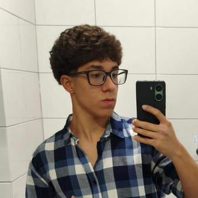
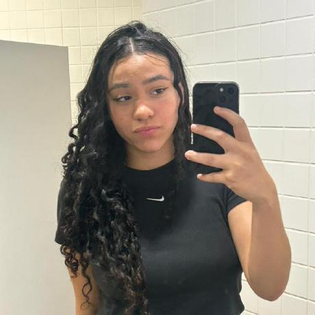

Trabalho de Desing professional
O Formulário Incrível é um protótipo web criado para tornar a avaliação de apresentações acadêmicas mais rápida e participativa. Pensado para colegas de turma e professores durante a defesa do projeto, ele resolve um desafio simples: coletar uma opinião objetiva sobre o trabalho em poucos segundos, sem burocracia.
📝
Avaliação instantânea
Formulário interativo que permite avaliar o projeto de forma rápida e simples.
👥
Mural da equipe
Apresentação dos integrantes da equipe, com foto, nome e função no projeto.
🎨
Design responsivo
Layout responsivo desenvolvido com Bootstrap 5, adaptável a computadores, tablets e celulares.
🧭
Navegação intuitiva
Menu intuitivo que permite acessar rapidamente as principais seções do site.
Este site foi construído de forma colaborativa: Pedro assinou a apresentação e a estrutura geral da página; Chiminello e Gabriel desenvolveram as funcionalidades e a lógica de navegação; Natali Nalevaiko organizou o mural da equipe; e Natali Santos cuidou do formulário de contato e das chamadas para ação. Conheça agora quem deu vida a cada etapa:
Pedro Taddei Viante

Apresentador
Natali Nalevaiko
Quem Somos (Mural da Equipe)
Natali Santos

Call to Action & Contato
Chiminello
Funcionalidades Principais
Gabriel Rezende
Funcionalidades Principais